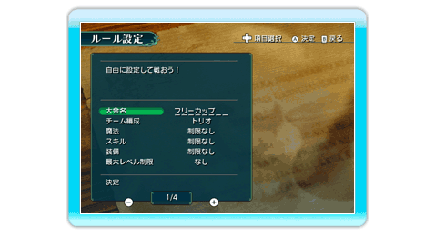

25 |
主催する |
 |

「主催する」を選択した場合、大会のルール（P.23で説明）を全て自分で設定し、大会を開催することができます。また、大会の参加者をすべて自分で決めることができます。 「ルール設定」「参加者設定」の順に設定を終えたら、大会がスタートします。 ■ルール設定について ルール設定のページは全4ページで、＋ボタン、－ボタンで切り替えられます。 全てのルールを設定し終えたら、「決定」を選んでください。 ■参加者設定について 参加者設定には以下のようなものがあります。 ◆チーム数設定 大会に参加するチームの数を、2・4・8・16の中から選択することができます。 ◆参加者設定 大会に参加する全てのチームのメンバーを設定することができ、トーナメント表からチームを選択しメンバーを設定します。この時、１ボタン、２ボタンであらかじめキャラクターの用意されている「NPCリスト」と、自分の作った勇者の保存された「勇者リスト」を切り替えることができます。 ※勇者リストの勇者を使い切るとリストの切り替え はできなくなります ◆プレイヤーチーム設定 自分で操作するチームを設定することができます。 「参加する」を選んだ場合、どのチームを操作するか選ぶことができ、「参加しない」を選択すると、どのチームも操作せずに大会を観戦することができます。 ◆空白をランダム設定 参加者を設定していないチームを、ランダムで設定することができます。 ◆すべて空白にする 参加者を設定したチームをすべて削除し、最初の状態に戻すことができます。 ◆この設定で開始する 全ての参加者設定を終えると選ぶことができるようになり、選択すると大会がスタートします。 |
 |
 |